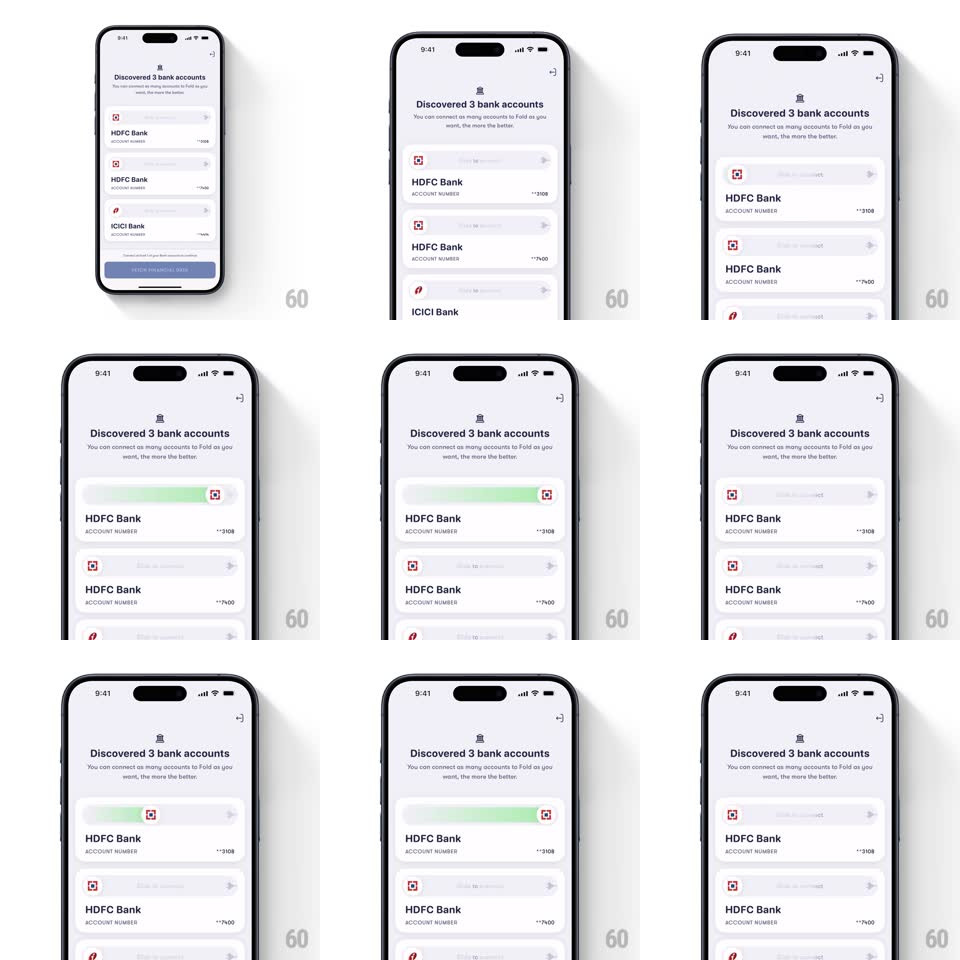

Media
Frame-by-frame

Rebuild this interaction 1:1: Fold's slide-to-connect rows - each discovered bank account (HDFC Bank, ICICI Bank) carries a slide slider; dragging the thumb right fills the track with a bright green gradient, and releasing early snaps the thumb back with a spring.

Rebuild this interaction 1:1: Fold's slide-to-connect rows - each discovered bank account (HDFC Bank, ICICI Bank) carries a slide slider; dragging the thumb right fills the track with a bright green gradient, and releasing early snaps the thumb back with a spring. ## Integration Integration: stack-agnostic spec - springs given as stiffness/damping, timed motions as duration + curve; map every value to your framework and animation library of choice. ## Scene "Discovered 3 bank accounts" header with subcopy, then a stack of account cards: bank logo, name, masked account number, and a full-width slider track (light gray, rounded) with a bank-logo thumb at its left end and a chevron hint at the right. ## Motion spec Pattern: slide-to-confirm slider with gradient fill and spring snap-back. - Grab the thumb: the track's hint chevrons fade (150ms); the thumb follows the finger 1:1, clamped to the track. - A green gradient fill grows behind the thumb, tied to drag progress - the track literally fills with commitment; a soft glow blooms under the thumb past 50%. - Release before 90%: the fill drains and the thumb springs home (spring ~300/14 - a lively double-bounce, ~350ms settle) - rejection feels physical. - Cross 90%: the thumb accelerates to the end (120ms), the fill flashes full-green, the thumb morphs into a check (icon swap, 200ms), and the card's state tint shifts - connected. - Other cards' sliders stay independent - each account connects on its own slide. ## Calibration - The threshold is 90% - the last 10% is free, so completion never feels fiddly. - The gradient is the progress readout - no percentage label needed. ## Reduced motion Thumb jumps to states with a 200ms fade on the fill; no bounce. ## Don't miss - Snap-back must overshoot slightly - a damped return reads as broken, a springy one reads as "not yet." - The thumb carries the bank's own logo - you're sliding the bank into Fold.